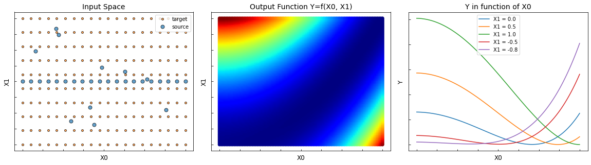
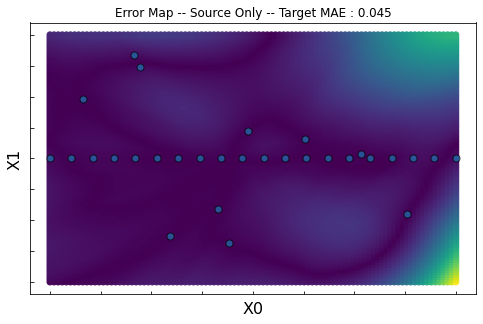
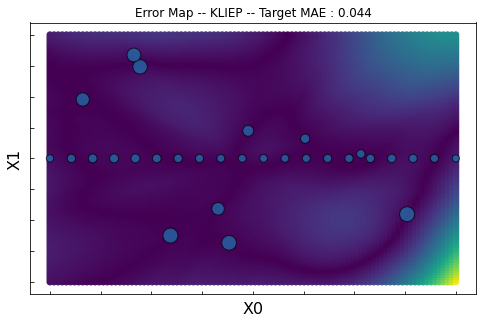

Sample Bias 2D
The following example is a 2D regression domain adaptation issue. The goal is to learn the regression task on the target data (orange points) knowing only the labels on the source data (blue points).
In this example, there is a sample bias between the source and target datasets. The sources are mostly located in X1=0 whereas the targets are uniformly distributed.
The following methods are being tested:
[1]:
import numpy as np
import matplotlib.pyplot as plt
from mpl_toolkits.mplot3d import Axes3D
import matplotlib.animation as animation
from sklearn.neural_network import MLPRegressor
from sklearn.metrics import mean_absolute_error, mean_squared_error
from sklearn.metrics.pairwise import rbf_kernel
from adapt.instance_based import KMM, KLIEP
import tensorflow as tf
from tensorflow.keras import Sequential
from tensorflow.keras.optimizers import Adam
from tensorflow.keras.layers import Dense
from tensorflow.keras.models import clone_model
Setup
[2]:
def f(x0, x1):
x0 = (x0 + 1.) / 2.
x1 = (x1 + 1.) / 2.
return (1/100) * (100 * (x1 - x0**2)**2 + (1 - x0)**2)
np.random.seed(5)
Xs = np.stack([np.linspace(-1, 1, 20), np.zeros(20)], -1)
Xs = np.concatenate((Xs, np.random.random((10, 2)) * 2 -1))
xt_grid, yt_grid = np.meshgrid(np.linspace(-1, 1., 20),
np.linspace(-1, 1., 10))
Xt = np.stack([xt_grid.ravel(), yt_grid.ravel()], -1)
x_grid, y_grid = np.meshgrid(np.linspace(-1, 1., 100),
np.linspace(-1, 1., 100))
ys = f(Xs[:, 0], Xs[:, 1])
yt = f(Xt[:, 0], Xt[:, 1])
z_grid = f(x_grid.ravel(), y_grid.ravel())
[3]:
fig = plt.figure(figsize=(20, 5))
ax1 = fig.add_subplot(1, 3, 1)
ax1.plot(Xt[:, 0], Xt[:, 1], '.', c="C1", label="target", ms=8, alpha=0.7, markeredgecolor="black")
ax1.plot(Xs[:, 0], Xs[:, 1], '.', c="C0", label="source", ms=14, alpha=0.7, markeredgecolor="black")
ax1.set_yticklabels([])
ax1.set_xticklabels([])
ax1.tick_params(direction ='in')
ax1.legend()
ax1.set_xlabel("X0", fontsize=12)
ax1.set_ylabel("X1", fontsize=12)
ax1.set_title("Input Space", fontsize=14)
ax2 = fig.add_subplot(1, 3, 2)
ax2.scatter(x_grid.ravel(), y_grid.ravel(), c=z_grid, cmap="jet")
ax2.set_yticklabels([])
ax2.set_xticklabels([])
ax2.tick_params(direction ='in')
ax2.set_xlabel("X0", fontsize=12)
ax2.set_ylabel("X1", fontsize=12)
ax2.set_title("Output Function Y=f(X0, X1)", fontsize=14)
ax3 = fig.add_subplot(1, 3, 3)
for x1 in [0., 0.5, 1., -0.5, -0.8]:
X_ = np.concatenate((
np.linspace(-1, 1, 100).reshape(-1, 1),
np.ones((100, 1)) * x1), axis=1)
ax3.plot(X_[:, 0], f(X_[:, 0], X_[:, 1]), label="X1 = %.1f"%x1)
ax3.set_yticklabels([])
ax3.set_xticklabels([])
ax3.tick_params(direction ='in')
ax3.legend()
ax3.set_xlabel("X0", fontsize=12)
ax3.set_ylabel("Y", fontsize=12)
ax3.set_title("Y in function of X0", fontsize=14)
plt.subplots_adjust(wspace=0.1)

Estimator
[19]:
np.random.seed(0)
tf.random.set_seed(0)
model = Sequential()
model.add(Dense(100, activation="relu", input_shape=(2,)))
model.add(Dense(100, activation="relu"))
model.add(Dense(1, activation=None))
model.compile(loss="mse", optimizer=Adam(0.001))
fit_params = dict(epochs=300, batch_size=34, verbose=0)
Source Only
[20]:
np.random.seed(0)
tf.random.set_seed(0)
estimator = clone_model(model)
estimator.compile(loss="mse", optimizer=Adam(0.001))
estimator.fit(Xs, ys, **fit_params);
[21]:
yp_grid = estimator.predict(np.stack([x_grid.ravel(), y_grid.ravel()], -1)).ravel()
error_grid = np.abs(yp_grid-z_grid)
score = mean_absolute_error(
estimator.predict(Xt).ravel(), yt)
fig, ax = plt.subplots(1, 1, figsize=(8, 5))
ax.plot(Xs[:, 0], Xs[:, 1], '.', c="C0", ms=14, alpha=0.7, markeredgecolor="black")
ax.scatter(x_grid.ravel(), y_grid.ravel(), c=error_grid)
ax.set_xlabel("X0", fontsize=16)
ax.set_ylabel("X1", fontsize=16)
ax.set_title("Error Map -- Source Only -- Target MAE : %.3f"%score)
ax.set_yticklabels([])
ax.set_xticklabels([])
ax.tick_params(direction ='in')
plt.show()

KMM
[22]:
np.random.seed(0)
kmm = KMM(model, gamma=2., random_state=0)
kmm.fit(Xs, ys, Xt, **fit_params);
Fit weights...
pcost dcost gap pres dres
0: 2.7084e+04 -4.3392e+05 1e+07 6e-01 2e-14
1: 2.3438e+02 -1.0551e+05 2e+05 4e-03 2e-11
2: 1.7072e+02 -2.1481e+04 2e+04 9e-06 2e-12
3: 1.6458e+02 -8.2292e+02 1e+03 4e-07 5e-14
4: 1.0422e+02 -6.2452e+02 7e+02 2e-07 3e-14
5: -7.2423e+01 -9.3040e+02 9e+02 5e-08 6e-15
6: -7.7015e+01 -2.8294e+02 2e+02 1e-08 2e-15
7: -7.9350e+01 -2.8047e+02 2e+02 1e-08 1e-15
8: -8.7166e+01 -1.2479e+02 4e+01 2e-16 3e-16
9: -8.9553e+01 -9.7350e+01 8e+00 2e-16 1e-16
10: -9.0635e+01 -9.2636e+01 2e+00 2e-16 2e-16
11: -9.1022e+01 -9.1316e+01 3e-01 2e-16 1e-16
12: -9.1106e+01 -9.1145e+01 4e-02 2e-16 1e-16
13: -9.1116e+01 -9.1120e+01 4e-03 2e-16 2e-16
14: -9.1118e+01 -9.1118e+01 6e-05 2e-16 2e-16
Optimal solution found.
Fit Estimator...
[23]:
yp_grid = kmm.predict(np.stack([x_grid.ravel(), y_grid.ravel()], -1)).ravel()
error_grid = np.abs(yp_grid-z_grid)
score = mean_absolute_error(
kmm.predict(Xt).ravel(), yt)
weights = kmm.predict_weights() * 100
fig, ax = plt.subplots(1, 1, figsize=(8, 5))
ax.scatter(x_grid.ravel(), y_grid.ravel(), c=error_grid)
ax.scatter(Xs[:, 0], Xs[:, 1], c="C0", s=weights, alpha=0.7, edgecolor="black")
ax.set_xlabel("X0", fontsize=16)
ax.set_ylabel("X1", fontsize=16)
ax.set_title("Error Map -- KMM -- Target MAE : %.3f"%score)
ax.set_yticklabels([])
ax.set_xticklabels([])
ax.tick_params(direction ='in')
plt.show()

KLIEP
[24]:
np.random.seed(0)
kliep = KLIEP(model, sigmas=[0.001, 0.01, 0.1, 0.5, 1., 2., 5., 10.], random_state=0, max_centers=200)
kliep.fit(Xs, ys, Xt, **fit_params);
Fit weights...
Cross Validation process...
Parameter sigma = 0.0010 -- J-score = -0.000 (0.000)
Parameter sigma = 0.0100 -- J-score = -0.004 (0.001)
Parameter sigma = 0.1000 -- J-score = -0.033 (0.009)
Parameter sigma = 0.5000 -- J-score = -0.068 (0.019)
Parameter sigma = 1.0000 -- J-score = -0.002 (0.022)
Parameter sigma = 2.0000 -- J-score = 0.157 (0.026)
Parameter sigma = 5.0000 -- J-score = 0.393 (0.023)
Parameter sigma = 10.0000 -- J-score = 0.467 (0.008)
Fit Estimator...
[25]:
yp_grid = kliep.predict(np.stack([x_grid.ravel(), y_grid.ravel()], -1)).ravel()
error_grid = np.abs(yp_grid-z_grid)
score = mean_absolute_error(
kliep.predict(Xt).ravel(), yt)
weights = kliep.predict_weights() * 100
fig, ax = plt.subplots(1, 1, figsize=(8, 5))
ax.scatter(x_grid.ravel(), y_grid.ravel(), c=error_grid)
ax.scatter(Xs[:, 0], Xs[:, 1], c="C0", s=weights, alpha=0.7, edgecolor="black")
ax.set_xlabel("X0", fontsize=16)
ax.set_ylabel("X1", fontsize=16)
ax.set_title("Error Map -- KLIEP -- Target MAE : %.3f"%score)
ax.set_yticklabels([])
ax.set_xticklabels([])
ax.tick_params(direction ='in')
plt.show()

[ ]: